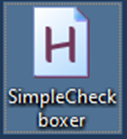
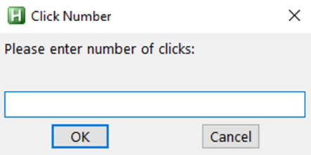
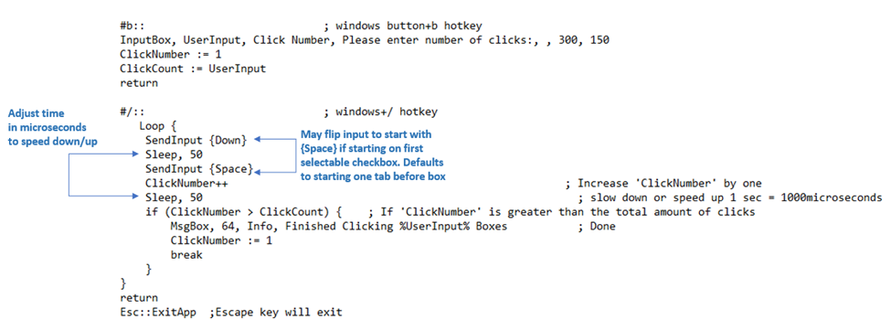
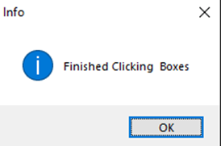
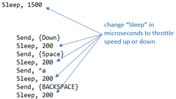

Automate Clicking Checkboxes in Any Application*
Introduction
This is a scripting tool using AutoHotkey that simplifies having to click a lot of checkboxes in any software application, particularly when the situation forces you to select a large list of values manually using checkboxes. These instructions provide solutions to two specific situations:
Option 1: Simple Checkbox Selection
For automating the selection (or deselection) of a specified number of checkboxes. For example, figure 1 displays a discrete list of 18 states with checkboxes. Running the tool provides an option to indicate how many checkboxes to click and is then ran to execute the clicking. This tool is the equivalent of pressing the keystrokes “down arrow then space bar” in a loop. A solution like this is usually preventable when there is a “select all” option available.
Figure 1. Selecting a specific number of checkboxes

-
Option 2: Lookup, Then Select Checkbox
For the automation of looking-up a list of specific values and selecting the checkbox for each one. This is accomplished by 1) the tool entering a discrete value in an application’s search bar, 2) the application pulling up the selectable value, and 3) the tool selecting the checkbox for the value. For example, figure 2 demonstrates how a list of specific states (Arizona, Nevada, Illinois, and Wisconsin) are entered one-by-one into an application that pulls up the value and is then selected.
Figure 2. Selecting a specific number of checkboxes

*Note:AutoHotkey works only on Windows
Getting Started:
-
If you do not have it installed already, download and install the current version of AutoHotkey: https://autohotkey.com/download/. Note: AutoHotkey v1.1 is being phased out.

Instructions for Option 1: Simple Checkbox Selection
Click and save the SimpleCheckboxer file linked here anywhere (network drive, desktop, your documents, etc.). For this demonstration, it is recommended placing the file on your desktop.
Simply double-click the SimpleCheckboxer file to load the script
Once the file is loaded, it should be visible in the workstation’s tray
To set the number of specified boxes to check, press this keystroke combo to activate the script: Windows button + b. This “hotkey” will display the “Click Number” box. Enter the number of clicks and press enter.
Once your cursor is in the destination application, press this keystroke combo to activate the script: Windows button + /
Note: The script can be edited by right-clicking the file and selecting “edit file”. There, it is possible to change the speed of the script or change where it starts selecting checkboxes.
When the script completes, it will display a window stated it is finished
If the script needs to be aborted immediately for any reason, just press the escape key (Esc) or right-click the loaded script in your tray and exit
Instructions for Option 2: Lookup, Then Select Checkbox
There are two parts:
Part 1
- Create and save the list of values in Microsoft Excel. A sample Microsoft Excel file that has the file name preloaded in the AutoHotkey script is provided (i.e. just add your data to the workbook).
- Note, the script will assume there is a header. Otherwise, the AutoHotkey file will need the different file name edited
- Note, the values entered into the spreadsheet must match the destination application’s values exactly to lookup cleanly
Part 2
- Click and save the CopyandPasterWithCheckboxer file linked here anywhere (network drive, desktop, your documents, etc.). For this demonstration, it is recommended placing the file on your desktop.
- Simply double-click the CopyandPasterWithCheckboxer file to load the script
- Once the file is loaded, it should be visible in the workstation’s tray
- Once your cursor is in the destination application’s search bar, press this keystroke combo (or “hotkey”) to activate the script: Windows button + b
- Note: Running the script will open the spreadsheet
- The script runs the process until it hits a blank cell. When the script completes, it will display a window stated it is finished.
- Note: The script can be edited by right-clicking the file and selecting “edit file”. There, it is possible to change:
- the speed of the script
 - the spreadsheet’s file name
- the speed of the script
- If the script falls off track and needs to be aborted immediately, just press the escape key (Esc) or right-click the running script in your tray and exit
Conclusion
These instructions provide two options for auto-clicking checkboxes using scripting through AutoHotkey. Both options, through editing, can be adjusted to give more flexibility for any special needs. If scripting is optimized for the destination application, this tool should provide increases in productivity when faced with the repetitive task of checking/unchecking many boxes.